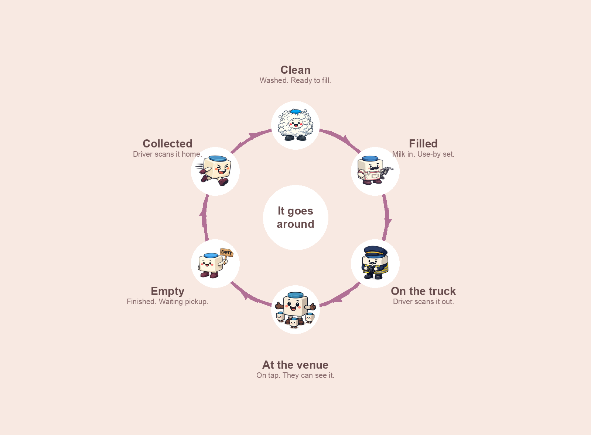
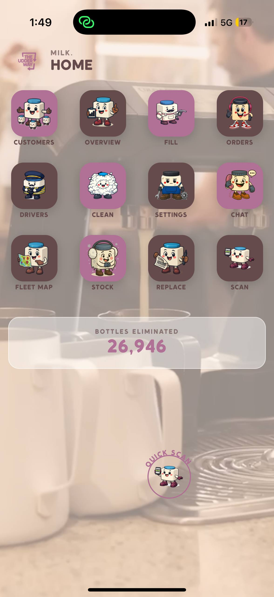
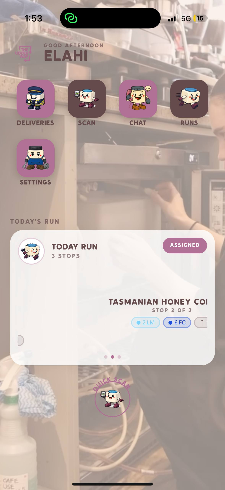
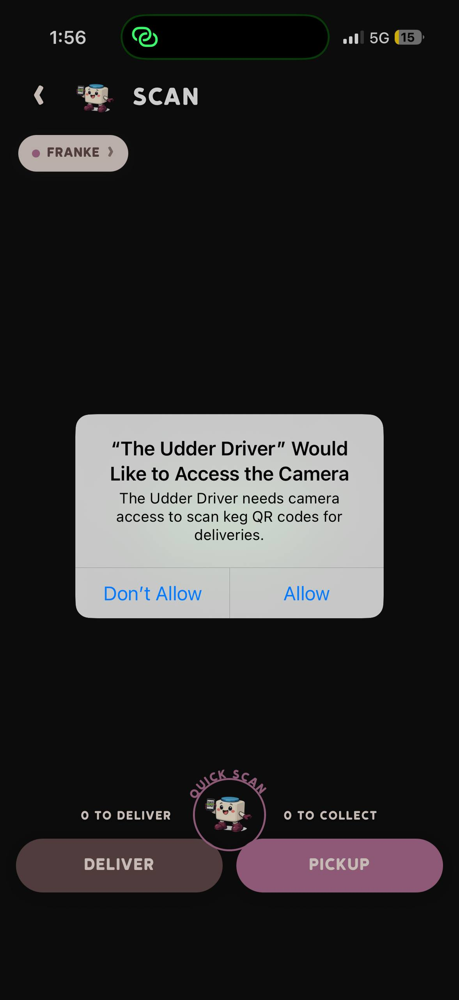
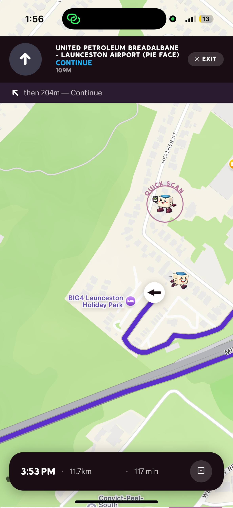
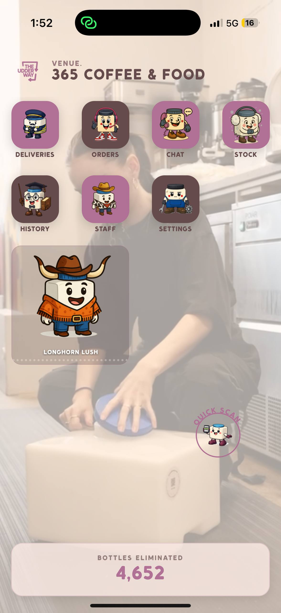
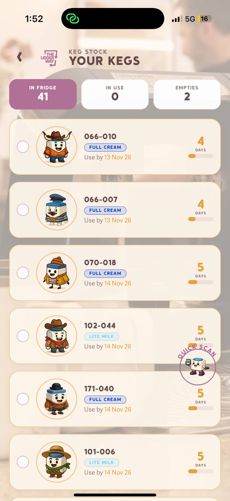
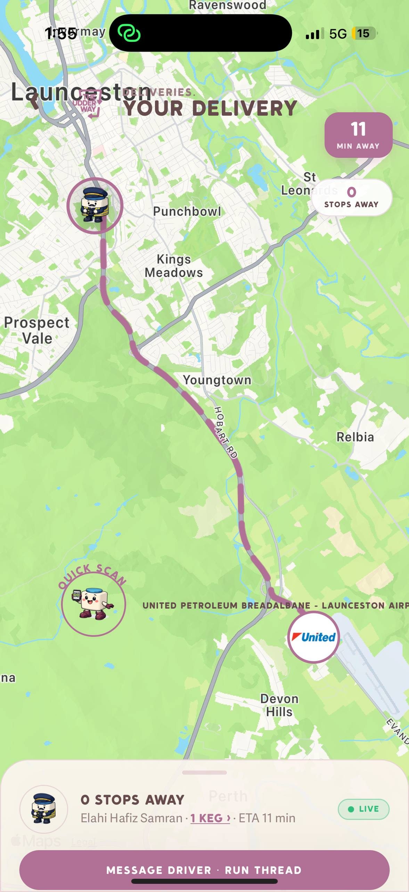
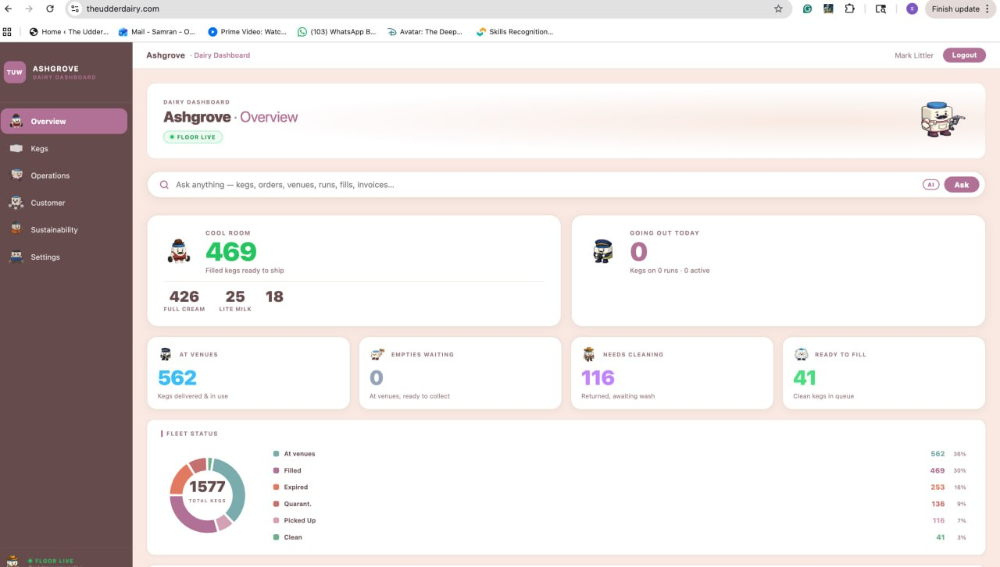
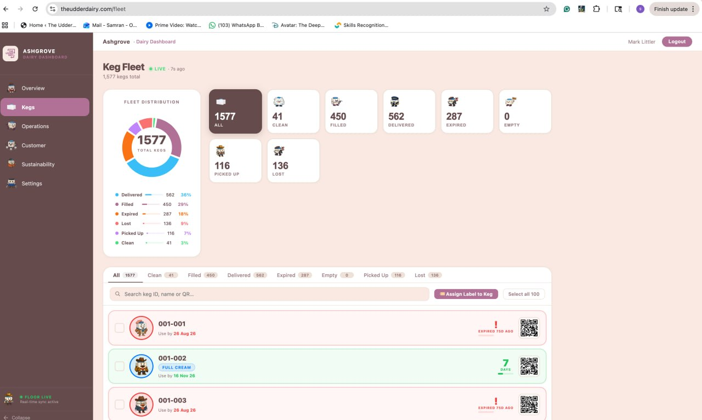

The Udder Way
One system.
Four apps.
Every keg.
The platform connects the dairy, the driver, and the venue. A scan on one phone updates the others. Every fill is recorded: who, what, when.
Keg lifecycle
Out full. Home empty. Then again.
Each step is a scan. Skip the scan and the keg does not move.

Quarantine is the exception: expired, damaged, or a bad fill. Only an admin releases it, and it comes back to washing.
The floor app.
Wash, fill, check stock, and send the run. Factory staff fill and clean. Admins build runs and manage venues. This app does not show the owner dashboard.


The two scans that matter
- Clean. Wash first. Scan second. An unscanned keg will not appear for fill.
- Fill. Wrong product miscounts the cool room. Fixing it needs an admin.
Tue and Fri are run days. Orders close the evening before. If the cool room is short, fill before the driver leaves.
Today’s stops. Nothing else.
The dairy builds the run. The driver opens a stop, scans what they leave, scans what they take, and moves on. The dairy updates as they scan.



Deliveries are recorded here, not in the venue app.
Their kegs. Their driver. Nothing else.
A venue sees only its own place. Stock on site, what is coming, and a way to order. No other venues. No dairy stock.



The same kegs, on a computer.
Phone apps do the work. The dashboard is the week, the fleet, and the number you show a venue. It is not the fill screen.


After you say yes
We set it up. You pour milk.
- The dairy. Name, products, delivery days. We load the kegs you already have.
- The people. Dairy logins, driver PINs, venue PINs. Each person gets one app.
- First run. Fill, deliver, collect, clean.